Partes de nieve
Partes de nieve diarios para esquiadores: dónde está la nieve, qué llega y dónde esquiar, a partir del mapa de nieve de SnowScope y de las estaciones de medida. Cada cifra sale de los datos del día.
Destacados
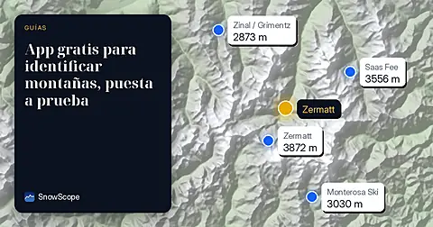
El buscador de cumbres de SnowScope es una app gratis para identificar montañas: apunta el móvil a las montañas y te dice el nombre de cada cumbre, con su altura, distancia y tiempo de subida. En nuestras pruebas, el 98 % de las cumbres que muestra están realmente a la vista, y en fotos reales corrigió errores de brújula de hasta 105° a 0,15°. Gratis con 3 nombres, todas las cumbres por 0,99 € en un solo pago.

Planifica tu viaje de diciembre de 2026 a Les Orres comparando los precios de los pases semanales con nuestro historial de nieve de 46 inviernos pasados.
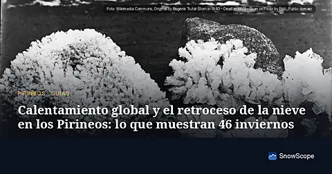
Menos días de nieve en los 120 puntos estudiados en los Pirineos desde 1980-81, sobre todo por debajo de 1500 m: nuestra serie de 46 inviernos.

Esquía en Livigno por 51,50 EUR al día antes del 18 de diciembre, cuando la nieve en la cima alcanza los 30 cm en el 100 % de los inviernos pasados.
Por encima de 1.500 m alrededor del Toubkal, el suelo estuvo blanco 94 días en el invierno 2025-26, la cifra más alta en 26 inviernos de imágenes de satélite. Hasta dónde bajó la nieve, cuándo se fue y cómo se compara este invierno con 2008-09 y con los años secos.

A menudo se vende Grandvalira como una opción económica para esquiar en diciembre, pero la nieve natural en la base promedia solo 9 cm en nuestros inviernos pasados.

Hemos comparado la nieve del 10 de noviembre con la mayor altura de nieve de cada invierno en 46 estaciones de esquí durante 46 inviernos. Un comienzo nevado ayuda, pero menos de lo que creen muchos esquiadores.

Whistler Blackcomb recibió 75 cm de nieve nueva en la cima en una semana y después una tormenta templada con 124 mm de agua. Una guía sencilla sobre base, nieve nueva, lluvia y costra.

Una tormenta el 4 de noviembre dejó de 8 a 13 inches de nieve nueva en cinco estaciones altas de Colorado cerca de Aspen. Cinco días después, la mitad había desaparecido. Qué significa esto para los días de powder.

Mad River Glen, Vermont: nieve natural, unas 30 in (75 cm) de pico habitual a media montaña en 46 inviernos pasados, febrero el más nevado. Tres formas de planear el día.

Mt. Baker en diciembre: 46 in (116 cm) de nieve a media montaña en un 15 de diciembre típico, y un forfait de 98,80 $ de lunes a jueves, que solo se vende el mismo día en taquilla.

Un cuaderno práctico sobre Oukaïmeden, en el Alto Atlas: cuándo suele llegar la nieve, cuánta, qué laderas elegir y cómo llegar desde Marrakech.

Whistler Blackcomb para cada nivel, con nuestro histórico: unos 370 cm de pico habitual a media montaña en 46 inviernos pasados, marzo y abril los meses más nevados.

El nivel de congelación alcanza 3590 m en los Pirineos el 9 de noviembre, trayendo lluvia sobre nieve a las laderas superiores delgadas. Lleva capas impermeables y polainas.

El área nevada de España bajó a 310 km² el 16 de noviembre. Solo 6 de 31 estaciones tienen nieve esquiable, lideradas por Aramón Cerler con 17 cm.

La cota de congelación alcanza 3620 m el domingo 8 de noviembre, por encima de los 2618 m de cumbre de Aramón Cerler, trayendo riesgo de lluvia sobre nieve (pronóstico de datos del 6 de noviembre).

El 16 de noviembre, Andorra tiene cobertura de nieve solo en el 2 % de su territorio mientras que Francia alcanza el 11 %; la diferencia refleja patrones otoñales, con nevadas más profundas pronosticadas la próxima semana.

El nivel de congelación alcanza 3400m–3600m durante los próximos tres días, trayendo lluvia al manto de nieve del 09 al 11 de noviembre. Previsión del 08 de noviembre.


Siete estaciones de esquí independientes del Oeste donde un forfait de día de adulto cuesta entre 49 y 98,8 $ en días de diario, comparadas con la nieve que suelen tener en diciembre.
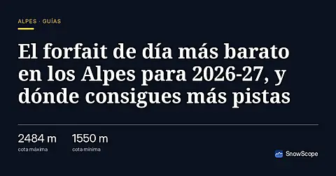
Forfaits de día en los Alpes desde 36 EUR: nueve estaciones comparadas por precio, kilómetros de pistas y la nieve que suelen tener, para encontrar el mejor día de esquí por tu dinero.

Forfaits de día en los Pirineos desde 46 EUR: seis estaciones de Francia, España y Andorra comparadas por precio, y después por la nieve que suelen tener en diciembre y enero.

Esquí en glaciar desde 68 EUR al día: hemos comparado siete glaciares de Francia, Austria, Alemania y Suiza por precio y por la nieve que suelen tener en diciembre.

Seis días de esquí desde 191 EUR: hemos clasificado diez semanas de esquí baratas en Europa por precio, y luego hemos revisado 46 inviernos pasados para ver dónde la nieve es fiable.


Esquía 157 km de pistas señalizadas en Serre Chevalier, donde la cima de la montaña tiene un 100 % de probabilidad de nieve a mediados de diciembre.

Diez estaciones de esquí europeas clasificadas por su valor en diciembre, lideradas por Les 2 Alpes con 75 cm de nieve a media montaña.

Boí Taüll empieza a 2039 m y supera a Baqueira Beret en el precio del forfait, aunque la nieve de principios de diciembre requiere algo de paciencia.

Orcières Merlette ofrece una base elevada a 1826 m y un pase de 6 días desde 227 EUR, lo que la convierte en una opción fiable para un viaje de esquí en diciembre.

¿Vale la pena Alpe d'Huez para diciembre de 2026? Comprobamos las probabilidades de nieve, el precio inicial de 58,00 EUR y lo comparamos con Les 2 Alpes.

Cauterets ofrece 25 km de pistas por 46 EUR, pero nuestro histórico de nieve muestra que la mejor oportunidad para encontrar cobertura es la última semana de diciembre.
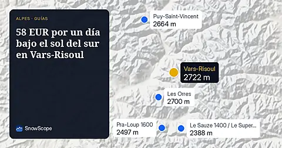
Esquía los 131 km de pistas en la Forêt Blanche este diciembre con un pase de seis días por 298 EUR.

En Monterosa Ski el forfait de día online va de 40,00 a 71,00 EUR. En diciembre la nieve está arriba: 124 cm habituales a 3030 m, 6 cm a 1207 m.
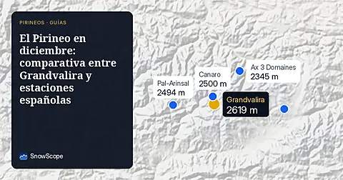
Compara Grandvalira y estaciones españolas en diciembre de 2026 en cuanto a espesores de nieve, cotas de remontes y precios desde 49,00 EUR.

Para una semana de esquí familiar a buen precio en diciembre en Astún-Candanchú, apunta a finales de mes, cuando las pistas altas tienen buena nieve en el 67 % de los inviernos pasados.
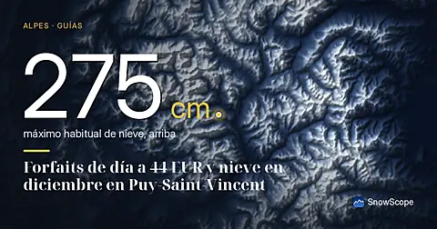
Puy-Saint-Vincent combina un forfait de adulto de 1 día por 44 EUR con una buena cantidad de nieve en diciembre en las zonas altas, comparado aquí con su gran vecino Serre Chevalier.

Grimentz-Zinal ofrece 71 km de pistas y nieve fiable en altura para tu viaje de diciembre, con pases de 6 días a CHF 339,00.

Austria antes de Navidad: Galtür 258 EUR y Kühtai 269 EUR por 6 días, con 30 cm en más del 90 % de los inviernos; los glaciares cuestan más, las estaciones pequeñas son una apuesta.

¿Planeas un viaje en diciembre a Baqueira Beret? Mira nuestro historial de nieve, precios de forfaits desde 70,00 € para un pase de 1 día, y cómo se compara con Astún-Candanchú.

Clasificamos las estaciones de esquí francesas según las probabilidades de nieve en diciembre y los precios de los forfaits, empezando desde 36,00 EUR por un pase diario de adulto en Les Karellis.

Compara las probabilidades de nieve en diciembre y los precios verificados de forfaits desde 40,00 EUR en las estaciones italianas para tu escapada de fin de semana en coche.
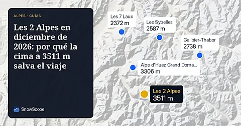
Les 2 Alpes llega a los 3511 m para asegurar nieve en diciembre de 2026, con un forfait de adulto de 6 días por 266,50 EUR.

Les Karellis ofrece 45 km de pistas y un forfait de 6 días para adultos por 191,00 EUR, con un 98 % de probabilidad de nieve a media montaña a finales de diciembre.

Montgenèvre tiene 56 cm de nieve habitual en diciembre en su base, dando a los esquiadores de fin de semana una cobertura más profunda que Sestriere al otro lado de la frontera.
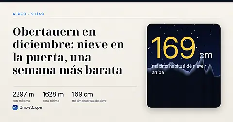
Esquiar en Obertauern en diciembre: 43 cm un 15 de diciembre típico a media montaña y forfait de 6 días a 331 EUR antes de Navidad.

Pila, sobre Aosta, combina un forfait de día a un precio fijo de 60,00 EUR con una nieve de diciembre fiable en sus cotas altas.
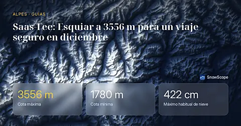
Los remontes de Saas-Fee llegan a 3556 m, donde nuestro historial de nieve muestra que el 100 % de los inviernos pasados tienen al menos 30 cm de nieve a mediados de diciembre.

Probabilidades de nieve en diciembre de 46 inviernos y precios diarios verificados: Ski Cooper 49 $, Les 3 Vallées 75,70 €, Oukaïmeden sin tarifa oficial. Dónde funciona un día de esquí barato en diciembre.

Descubre las tranquilas pistas de St-Luc Chandolin, donde la nieve a media montaña ha alcanzado los 30 cm en el 98 % de los inviernos durante finales de diciembre.

Valloire-Valmeinier ofrece 131 km de pistas y un 98 % de probabilidad de tener 30 cm de nieve a media montaña a mediados de diciembre.

¿Puede un esquiador principiante y prudente confiar en Courmayeur en diciembre, cuando la media a media altura es de 60 cm de nieve según nuestro historial de inviernos pasados?

Cuánto tiempo estuvieron blancos los Pirineos cada invierno desde 2000-01, vistos por satélite, y el espesor de nieve en 10 estaciones con series largas. Tres inviernos flojos seguidos terminaron en 2025-26; este otoño ha empezado con normalidad.
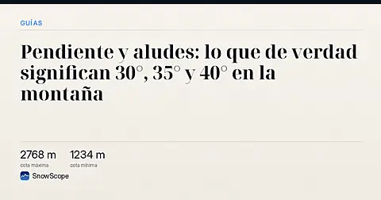
Un mapa de pendientes de Les Grands Montets y otras siete estaciones muestra cuánto terreno supera los 30°, 35° y 40°, y por qué ese umbral importa para los aludes.

En 24 de 46 inviernos, las estaciones de la vertiente italiana y del sur de los Alpes franceses tuvieron un invierno relativamente mejor que la vertiente norte. El gráfico, los grandes años y el tiempo que hubo detrás.

En diciembre, la nieve depende sobre todo de la altura. 46 inviernos pasados en 676 estaciones de los Alpes muestran cuánta nieve esperar el 1, el 15 y el 22 de diciembre, desde menos de 1200 m hasta más de 2400 m.

Un plan barato de 3 días en el lago de Como en diciembre con precios reales 2026-27: trenes, barcos, funicular y esquí en Piani di Bobbio o Madesimo, lo que ahorras frente a Cortina y la probabilidad de nieve en Navidad.

Cuánta agua podría guardar la nieve del Atlas en febrero de 2027: la previsión estacional europea es unos 3 °C más cálida y más húmeda al oeste y al sur, así que las probabilidades de nieve siguen bajas en las cuencas de Marruecos.

Vail en cifras: un pico habitual de unas 64 in (162 cm) a media montaña en 46 inviernos pasados, marzo el mes más nevado, más terreno, acceso y seguridad.

Zermatt en cifras: dónde dura la nieve, los meses más seguros y cómo llegar al pueblo sin coches, a partir de 46 inviernos pasados.

Steamboat, Colorado, en familia: qué funciona para los más pequeños, los niños, los adolescentes y los padres, con la nieve de 46 inviernos pasados a tres alturas.

¿Es Verbier para principiantes? ¿Cuándo es mejor la nieve? ¿Cómo se llega? Respuestas sobre las 4 Vallées y 46 inviernos pasados.

Cómo pasar el primer día en Park City Mountain, Utah, y cuándo ir: nuestro histórico da unas 71 in (180 cm) de pico habitual a media montaña en 46 inviernos pasados.

La Sella Ronda desde Sëlva en Val Gardena: puertos de Gardena, Campolongo, Pordoi y Sella en orden, con nuestro histórico de nieve de 46 inviernos pasados.

Mt Baker, Washington: unas 133 in (337 cm) de pico habitual a media montaña en 46 inviernos pasados, un récord mundial de nieve y ningún alojamiento a pie de pista.

Val d'Isère y el Espace Killy para principiantes, esquiadores medios y expertos, con la nieve de 46 inviernos pasados a tres alturas.

Planifica Mammoth Mountain por temporada: unas 93 in (235 cm) de pico habitual a media montaña en 46 inviernos pasados, marzo el más nevado, primaveras largas e inviernos variables.

Kitzbühel es famosa y baja. Lo que dicen 46 inviernos pasados de la nieve a 762 m, 1.377 m y 1.993 m, qué ha cambiado y qué semanas son la apuesta más segura.

Diez puntos prácticos para un viaje de esquí a Livigno: las carreteras, el frío, las tiendas libres de impuestos, las dos laderas y la mejor época de nieve, según 46 inviernos pasados.

Llegar a Telluride en invierno, aeropuerto por aeropuerto: Telluride Regional, Montrose, la carretera 145 con la ley de tracción de Colorado y la telecabina gratuita a Mountain Village.

Una lista práctica para Stowe, Vermont: capas, protección de la cara, máscara, cantos afilados y calentadores, ligada a la nieve de 46 inviernos pasados en Mount Mansfield.

Esquiar en Lake Louise a principio de temporada: por qué empieza pronto, cómo suele ser la nieve de noviembre y diciembre en 46 inviernos pasados y cómo esquiar sobre una base todavía fina.

Qué es verdad de La Grave, la montaña del fuera de pista bajo la Meije: terreno, seguridad, nieve por mes y tendencia, a partir de 46 inviernos.

Big Sky, Montana, fácil de imaginar: 5850 acres bajo el Lone Peak, y una nieve unas cinco veces más gruesa cerca de la cima que en la base en 46 inviernos pasados.

Esquía primero en tu cabeza todo el desnivel de Revelstoke: la nieve en la cima, a media montaña y en la base del valle en 46 inviernos pasados, y cuándo está mejor cada parte.

Siete días en la Silvretta Arena, uno a uno: dónde está la nieve, cuándo pasar a Samnaun y qué dicen 46 inviernos pasados de la nieve de Ischgl a tres alturas.

Aspen Snowmass comparado: Snowmass tiene unas 75 in (190 cm) de pico habitual a media montaña en 46 inviernos pasados, Aspen Mountain unas 69 in (174 cm).

Gourette y Cauterets frente a frente: altitudes, nieve habitual por mes, mejores semanas y cómo llegar, a partir de 46 inviernos pasados.

Banff Sunshine Village mes a mes: unos 100 cm a media montaña en un marzo habitual en 46 inviernos pasados, abril el más nevado arriba y temporada hasta finales de mayo.

Alpe d'Huez mira al sol. Cómo planear el día por la hora y la altura, con la nieve de 46 inviernos pasados desde los pueblos bajos hasta el Pic Blanc.

Nuestra serie de 46 inviernos en los Alpes, 108 puntos de 667 a 3872 m: menos días de nieve en todos, claramente en el 81 %. Qué cambió y por qué.

Baqueira-Beret está en el Valle de Arán, en la vertiente atlántica del Pirineo. Qué significa para su nieve, comprobado con 46 inviernos pasados frente a La Molina, y cuándo ir.

Cómo pasar un primer día de esquí en Chamonix, de los Grands Montets sobre Argentière a la hora adecuada para cada ladera, con 46 inviernos de datos de nieve.

Cortina d'Ampezzo de tres maneras: Tofana, Faloria-Cristallo y Cinque Torri-Lagazuoi, con 46 inviernos de datos de nieve a tres alturas.

Chantarella, Marguns, Piz Nair, White Turf: las palabras que se oyen en St. Moritz, explicadas, y lo que 46 inviernos pasados de nuestro histórico de nieve dicen de cada altura de Corviglia.
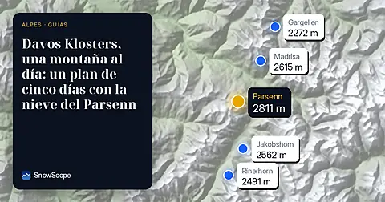
Davos y Klosters comparten seis montañas de esquí. Un plan día a día, empezando por el Parsenn, con lo que 46 inviernos pasados de nuestro histórico dicen de sus alturas.

Cuándo reservar Courchevel y las 3 Vallées, qué pueblo elegir y dónde dura la nieve, a partir de 46 inviernos pasados.

St. Anton y Ski Arlberg a lo largo del invierno: el espesor de nieve habitual cada mes a tres alturas, a partir de 46 inviernos pasados.

Un año de nieve en Sölden, fase a fase: cuándo blanquean los glaciares, el fin de semana de Copa del Mundo, el centro del invierno y las semanas de primavera, según 46 inviernos pasados a tres alturas.

Cómo aprovechar un día en Luz-Ardiden, una pequeña estación sobre Luz-Saint-Sauveur en los Altos Pirineos: la carretera, los dos sectores, la nieve de 46 inviernos pasados y qué semanas elegir.
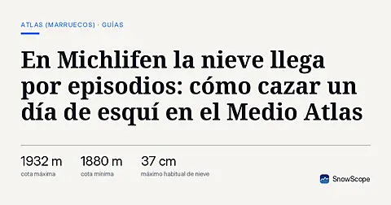
Michlifen, cerca de Ifrane, tiene nieve en episodios cortos más que una temporada. Lo que muestran 46 inviernos pasados, por qué el espesor habitual es cero y cómo estar allí los días buenos.
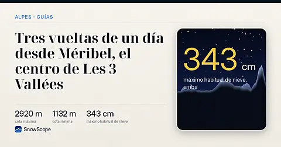
Tres maneras de pasar un día desde Méribel: al este hacia Courchevel, al sur hacia Val Thorens o en casa en el Mont Vallon, con la nieve de 46 inviernos pasados a tres alturas.